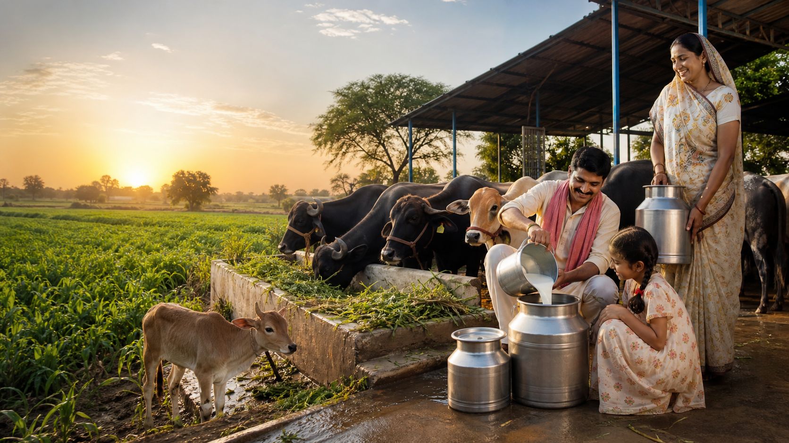

Animals first
Each cow and buffalo has a health record, feed plan, and medication history. They are not machines — they are family.

We grow our fodder. We name our cows.
We track every litre, every day.
Vayumukhi Dairy is a family farm where every animal has a name, every field grows its own feed, and every litre of milk is tracked from shed to customer.
Each cow and buffalo has a health record, feed plan, and medication history. They are not machines — they are family.
We grow Napier grass, seasonal crops, and mineral-rich blends on our own land. What goes in shows in the milk.
Every litre of production, every sale, and every expense is tracked daily so growth is based on facts, not guesses.
Morning and evening collection tracked by batch, fat percentage, route, and customer.
Thick, probiotic-rich curd set daily from fresh whole milk for households and stores.
Soft, fresh-pressed paneer for restaurants, subscriptions, and household daily orders.
Slow-cultured, clarified ghee from our own cream — rich, golden, and farm-traceable.
Most dairy brands make promises. Vayumukhi Dairy is built around a daily record system that proves every claim — from how much milk was collected this morning to the health status of every animal.
One desk for your farm, every day. Track milk, animals, sales, costs, and get AI-powered alerts — all from your phone.
Open Owner Workspace